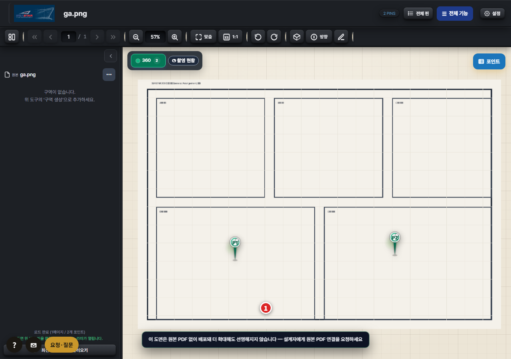
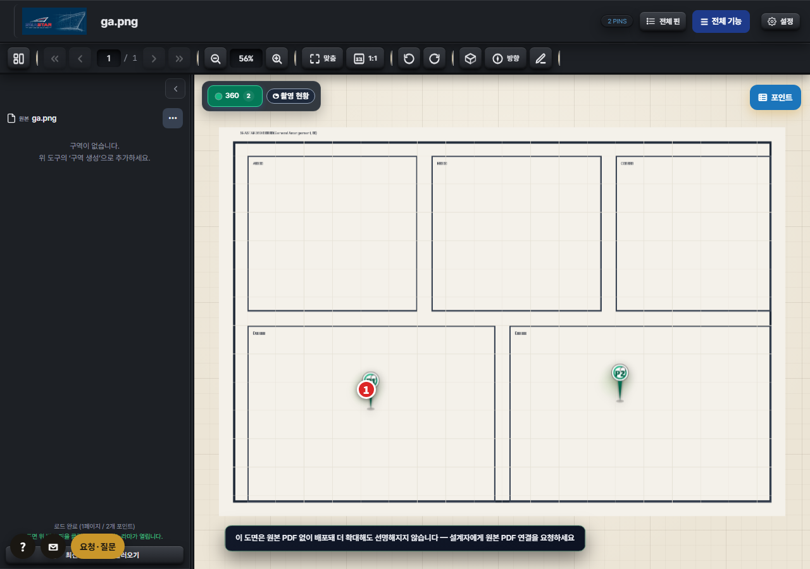
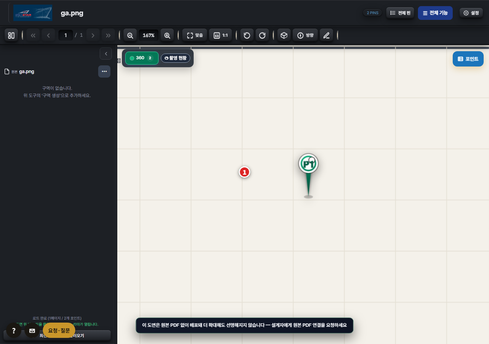
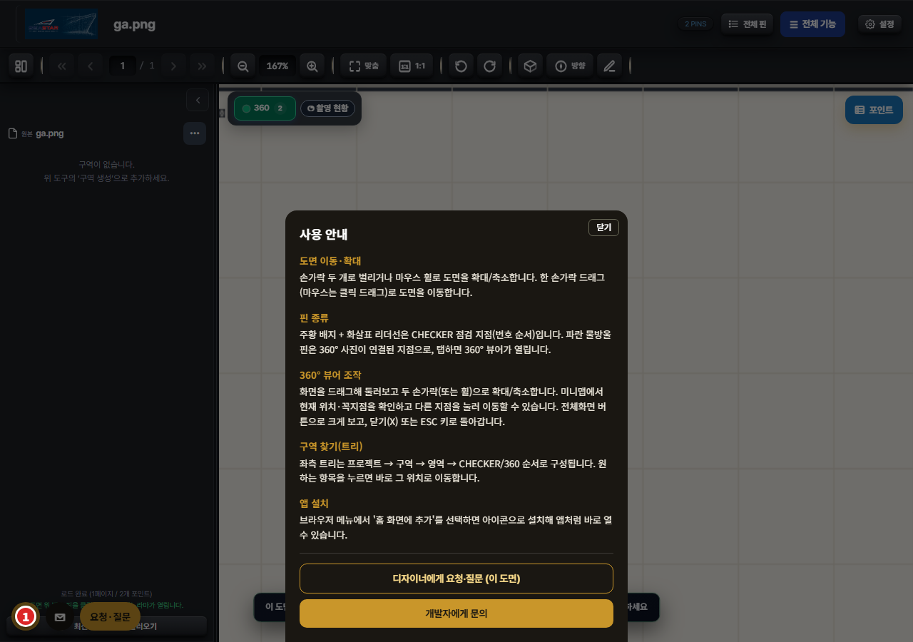

이 설명서는 "360 만" 모드로 발급된 열람 링크를 받은 분을 위한 것입니다. 이 링크에서는 360 사진 핀과 360 파노라마 뷰어만 보이고, CHECKER 번호 핀은 보이지 않습니다(서버가 데이터 단계에서 걸러서 보냅니다).
전달받은 열람 링크(https://…?mode=viewer&d=…&lk=…)를 누르면 로그인 없이 바로 도면이 열립니다. 상단에 360 배지와 포인트 수가 표시됩니다 — 이 숫자가 360 촬영 포인트 개수입니다(CHECKER 번호 핀은 세지 않습니다).

도면 위 초록색 핀이 360 촬영 지점입니다. CHECKER 번호 핀(주황색)은 이 링크에서는 전혀 나타나지 않습니다.

핀을 누르면 그 지점의 정보 카드가 열립니다. 썸네일(작은 사진)을 누르면 360 파노라마 뷰어가 전체 화면으로 열립니다.
뷰어가 열리면 화면을 드래그해 360도 둘러볼 수 있습니다(휴대폰은 손가락 드래그). 마우스 휠이나 핀치로 확대·축소합니다. 화면 한쪽의 작은 지도(미니맵)로 지금 보는 방향을 확인할 수 있고, 좌우 화살표로 이전/다음 360 사진으로 이동합니다. 자동 회전 버튼을 누르면 화면이 저절로 천천히 돕니다.

같은 위치를 여러 번 촬영한 포인트는 핀 카드에 "사진 이력"이 뜹니다. 과거/최신 사진을 나란히 놓고 비교하려면 "전/후 분할비교" 또는 "360 동기 비교" 버튼을 누르세요. 두 사진을 동시에 돌려보며 비교할 수 있습니다.
상단의 [촬영 현황] 버튼을 누르면 이 도면에서 어느 위치가 촬영됐고 어느 위치가 아직인지 한눈에 볼 수 있습니다.
화면 아래 [요청·질문] 버튼으로 담당자에게 메시지를 보낼 수 있습니다. 특정 360 포인트에 대한 요청이면 그 핀을 먼저 연 뒤 작성하세요.
화면 아래 물음표(?) 버튼을 누르면 설명이 필요한 버튼 옆에 작은 "?" 표시가 나타납니다. 눌러서 설명을 확인하세요.
